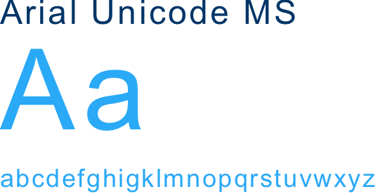
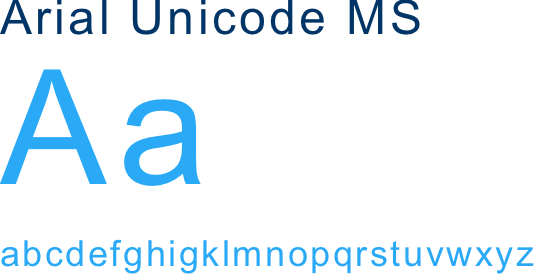

Asthma APP
Tools
Sketch / HTML / CSS
Asthma
Prevention is better than cure.
Knowing the condition of weather and environmental exposure data,
also make daily record for preventive action.
—
The app provides multi-vital signs and emergency assistance messages
when asthma attacks.
UserFlow
Wireframe
Asthma APP
Prevention is better than cure. The environment information
and the diary record can help the patients take preventive
actions. Also, the data can be shared with their clinicians.
When asthma attacks, the app can guide the patients the right
management, meanwhile, the data will be recorded and the
emergency assistance messages will be sent automatically.
Color & Typography & Icons
 


Log in and
fill in the Profile Information
Smoke habit and medicine
allergy history can help the clinician
know more about the patients.
Mainpage
When feeling uncomfortable or asthma attacks,
press the button - Asthma Attack.
Use the front camera of a mobile
phone to capture the light and
dark changes caused by the
blood flow through the fingers
when the heartbeat.
It is abnormal when heart rate is
over 110 bpm (beats per min).
Use the phone's microphone
to receive sound of breath.
It is abnormal when breath rate
is over 25 brpm (breaths per min).
Send the emergency assistance message
automatically. Also, the data will all be
recorded.
The guide can help the patient calm down
and do the right contingency measures.
The AQI (Air Quality Index),
pollen and temperature
are very important for asthma
patient to prevent attack.
The level of AQI and Pollen
will also appears on the
main page.
The app helps patients to monitor and record their
heart rate and respiratory rate. The app allows patients
to record their symptoms and inhaler usage in the
editable diary.
In addition, patients can share
the data with their clinicians.
The app allows patients to set the alarm to remind them to take medicine,
or write the daily record on the app.
The patients can set the message by themselves.